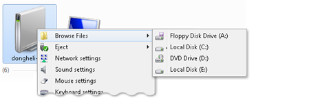
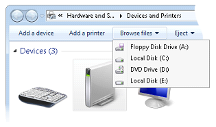

Another option for adding verbs to a cascading menu is through IExplorerCommand::EnumSubCommands. This method enables data sources that provide their command module commands through the IExplorerCommandProvider interface to use those commands as verbs on a shortcut menu. In Windows 7 and later, you can provide the same verb implementation using the IExplorerCommand interface as you can with the IContextMenu interface.
The following two screen shots illustrate the use of cascading menus in the Devices folder.


[!Note]
Because IExplorerCommand supports in-process activation only, it is recommended for use by Shell data sources that need to share the implementation between commands and shortcut menus.
Â
Â
Â